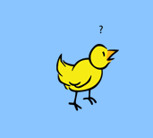

Kinalyze Now!

About Kinalyzer:
Kinalyzer is a software suite developed to reconstruct sibling groups using genotypes from codominant markers such as microsatellites. Currently there are two algorithms available to reconstruct full-sibling groups for cases where parental genotypes are not available. Kinalyzer uses combinatorial optimization based on Mendelian inheritance rules to find the fewest number of sibling groups that contain all the individuals in the sample (‘2-allele set cover’).Citation:
If you publish results using analysis performed by Kinalyzer please acknowledge it by the following citations:T.Y. Berger-Wolf, S.I. Sheikh, B. DasGupta, M.V. Ashley, I.C. Caballero, W. Chaovalitwongse, S.L. Putrevu, "Reconstructing Sibling Relationships in Wild Populations", Bioinformatics, 23(13), 49-56, 2007
S.I. Sheikh, T.Y. Berger-Wolf, M.V. Ashley, I.C. Caballero, W. Chaovalitwongse and B. DasGupta "Error-Tolerant Sibship Reconstruction for Wild Populations", International Conference on Computational Systems Biology, 7, 273-284, 2008